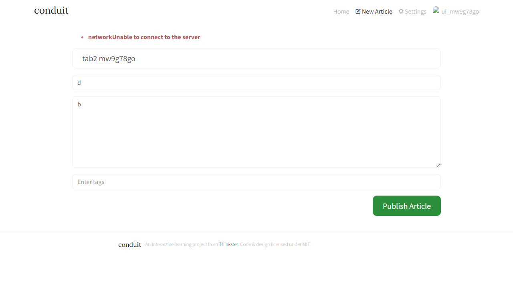
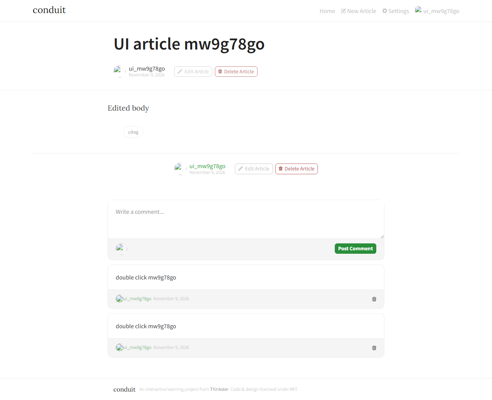
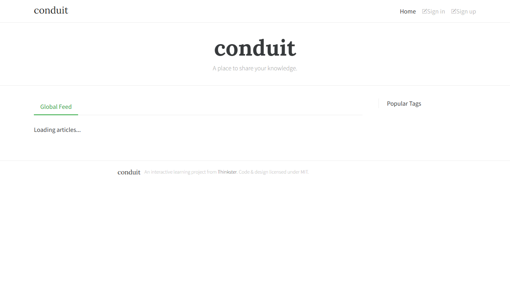

RealWorld "Conduit" (blog platform) · Prepared by Sakshi Desai · 9 November 2026
The app is not ready for production. The most serious problem is that people can't see each other's content: articles and comments posted by real users are only visible to the person who wrote them, so the home page looks empty to visitors and authors never see replies. That alone explains the "it feels broken" reports.
Top 3 risks: (1) user content is invisible to everyone else, so the product's main purpose doesn't work; (2) many ordinary mistakes crash the server, which then shows internal technical details and tells users "Unable to connect to the server" when the real cause is something else; (3) weak account protection: one-character passwords are accepted, login attempts are unlimited, and a stolen login stays valid for 60 days even after the user logs out.
I found 10 issues (1 Critical, 3 High, 4 Medium, 2 Low). Each one was reproduced on the running app and has a repro script that can be rerun, plus saved evidence. Several things that are often broken in apps like this worked correctly; they're listed in section 5.
| Application | RealWorld "Conduit". The public demo (demo.realworld.io) was down on test day (HTTP 404; its API returned 530), so I ran it locally. |
| Backend | gothinkster/node-express-realworld-example-app @ 30b68e1 (Express 4 + Prisma 4 + PostgreSQL 16), Node 20 |
| Frontend | gothinkster/vue-realworld-example-app @ db749e3 (Vue 3 + Vite), Node 22 |
| Runtime | Docker Compose (Docker 29.7.2) on Windows 11; app at localhost:8080, API at localhost:3000/api |
| Tools | curl (API), Playwright 1.56 with headless Chromium 141 (UI), axe-core 4.11 (accessibility), code review of both repos |
| Scope | Sign-up, login, create/edit/delete article, comments, favorite, follow, logout; validation, session, access control, XSS, error handling, double-submit, API outage, slow network, accessibility |
Severity rubric: Critical = core purpose broken or data loss for normal users, no workaround · High = security weakness with real impact, or data loss/failure in a main flow · Medium = wrong behaviour with a workaround, or an info leak · Low = cosmetic, polish, accessibility hardening. Ranked by impact on production use.
| # | Title / Summary | Steps to Reproduce | Expected vs Actual | Severity | Suspected Cause |
|---|---|---|---|---|---|
| 1 | Users can't see each other's articles or comments | 1. Sign up as Alice, publish an article. 2. Log out (or sign up as Bob). 3. Open Home → Global Feed, or Alice's profile. 4. As Bob, comment on Alice's article; log in as Alice and open it. | Expected: everyone sees Alice's article; Alice sees Bob's comment. Actual: Global Feed says "No articles are here... yet"; GET /articles?author=alice returns articlesCount: 0 for Bob; Alice gets {"comments":[]}. Direct links still work, so it seems random to users. |
Critical | List queries only include authors where demo = true or the current user. Only seeded accounts have demo = true; real sign-ups are forced to false. article.service.ts:13-25, 419-431; auth.controller.ts:16. See RCA. |
| 2 | Bad requests crash with HTTP 500 and expose internal error text | Logged in, send: (a) comment on a non-existent article; (b) favorite a non-existent article; (c) change your email to one another user has; (d) POST /articles or a comment with a malformed body. | Expected: 404 / 422 with a friendly message. Actual: HTTP 500 in all 5 cases, with raw text such as Invalid `prisma.user.update()` invocation: Unique constraint failed on the fields: (`email`) and Cannot read properties of undefined (reading 'body'). |
High | The global error handler sends err.message for any unknown error (main.ts:44). Services don't check that the article exists (article.service.ts:478-492) or that the email is unique on update (auth.service.ts:151). The controller reads req.body.comment.body without validating it (article.controller.ts:175). |
| 3 | Editing an article silently deletes all its tags | 1. Create an article with tags keep-me, and-me. 2. PUT /articles/:slug with only {"body":"typo fixed"}. 3. GET the article. |
Expected: only the body changes (fields you don't send stay the same, as the spec says). Actual: tagList: [], both tags gone. The web UI always resends tags, so mainly API clients and integrations (mobile app, scripts) are affected. |
High | updateArticle always calls disconnectArticlesTags(slug) before saving (article.service.ts:343), even when the request has no tagList. It's also not wrapped in a transaction. |
| 4 | No brute-force protection, and one-character passwords are allowed | 1. Sign up with password 1. 2. Send 30 wrong logins in a row, then the right one. |
Expected: a minimum password strength; after a few failures, a 429 response or a delay. Actual: sign-up returns 201; all 30 failures return 403 with no slowdown, and the 31st (correct) login succeeds. An attacker can guess passwords without limit. |
High | No rate-limiting middleware in main.ts. createUser only checks that the password is not blank (auth.service.ts:52). |
| 5 | Logging out doesn't end the session; tokens last 60 days | 1. Log in, copy the token (stored in localStorage). 2. Click "Or click here to logout". 3. Call GET /api/user with the old token. |
Expected: 401 after logout. Actual: 200, still logged in. The token is valid for 60 days ( exp − iat = 5,184,000 s). It sits in localStorage, so any future XSS bug could read it. |
Medium | Logout only deletes the token in the browser; the server has no logout or revoke step (web/src/store/auth.js purgeAuth). Long expiry is set in token.utils.ts:5. |
| 6 | Users get "Unable to connect to the server" for errors that aren't network errors | (a) Settings → change email to an existing user's → Update. (b) Open the editor in two tabs, log out in tab 1, press Publish in tab 2. | Expected: "Email already taken" / "Your session ended, please log in again". Actual: both show networkUnable to connect to the server (wrong message, plus a missing space). In (b), tab 2 still shows the user as logged in. The API actually returned 500 and 401. |
Medium | The frontend only understands error bodies shaped {errors:{...}}; anything else is labelled a network failure (web/src/common/errors.js:15). The backend's 401 and 500 bodies use a different shape (main.ts:35-44). |
| 7 | Titles in Hindi, Chinese, emoji or only spaces break article links | 1. Publish an article titled नमस्ते दुनिया. 2. Publish a second one titled मेरा दूसरा लेख. 3. Also try a title of only spaces. |
Expected: both publish, each with its own URL; a blank title is rejected. Actual: the first gets slug -11; the second is rejected with 422 title must be unique. A title of 5 spaces is accepted (slug -13). A 20,000-character title is also accepted. |
Medium | The slug is slugify(title) + user id (article.service.ts:178). slugify drops characters it can't transliterate, so all non-Latin titles from one user collide. Validation uses !title, so whitespace passes; there's no max length. |
| 8 | Double-clicking "Post Comment" posts the comment twice | Open an article, type a comment, double-click Post Comment, reload. | Expected: one comment. Actual: two identical comments (screenshot E8). |
Medium | The comment form never disables its button while saving (web/src/components/CommentEditor.vue:16, 41), unlike the article editor, which uses :disabled="inProgress". The API has no idempotency check. |
| 9 | If the API is down, the home page spins forever | Block or stop the API, then open the home page. | Expected: "We can't load articles right now" plus a retry button. Actual: "Loading articles..." stays on screen indefinitely, and Popular Tags stays empty (screenshot E9). |
Low | The load error is swallowed: fetchArticles(...).catch(() => {}), which leaves isLoading true (web/src/components/ArticleList.vue:87-89). |
| 10 | Broken avatar images and accessibility failures | Sign up and look at the header and comments; run axe-core on the Home, Article, Editor and Settings pages. | Expected: a working default avatar; no serious axe violations. Actual: every new user's avatar is a broken image (its URL returns HTTP 530). axe found: image-alt (critical, 2–6 per page), color-contrast (serious, up to 18 elements), link-name (serious), and missing main landmark. |
Low | The default image is hard-coded to the retired api.realworld.io domain (schema.prisma:48). Avatar <img> tags have no alt text, and the theme's light-grey text is below 4.5:1 contrast. |
What happens. When Alice publishes an article, it appears in her own lists, but Bob, anonymous visitors, and tag pages all get an empty result (articlesCount: 0). Comments are filtered the same way, so Alice never sees Bob's comment on her own article. Opening the article by its direct URL works, which makes the problem look intermittent and hard for users to describe.
Why. In src/app/routes/article/article.service.ts, buildFindAllQuery (lines 13-25) always adds an author filter OR: [{ demo: true }, { id: currentUserId }], and getCommentsByArticle (lines 419-431) does the same for comments. The demo column is only true for accounts created by the seed script (src/prisma/seed.ts:22), and the sign-up route forces demo: false for every real user (auth.controller.ts:16). This looks like a moderation rule for a public demo server ("only show curated seed content plus your own posts") that shipped as the default behaviour of the app. getArticle (single article) has no such filter, which is why direct links still work.
Fix. Remove the visibility clause from both queries, so lists filter only by what the user asked for (author, tag, favorited):
// article.service.ts – buildFindAllQuery
const queries: any[] = [];
if ('author' in query) queries.push({ author: { username: { equals: query.author } } });
if ('tag' in query) queries.push({ tagList: { some: { name: query.tag } } });
if ('favorited' in query) queries.push({ favoritedBy: { some: { username: { equals: query.favorited } } } });
return queries;
// getCommentsByArticle – drop `where: { OR: queries }` from the comments include
If moderation is actually needed, it should be an explicit, documented feature (for example a hidden flag on articles, off by default), not a side effect of a demo flag.
How to stop it coming back. Add a two-user integration test that runs in CI against a real database: Alice publishes, then Bob and an anonymous client call GET /articles?author=alice and must get articlesCount: 1; Bob comments, and Alice's GET /articles/:slug/comments must include it. The existing unit tests mock Prisma (src/tests/prisma-mock.ts), so they can't catch a wrong where clause; this bug only shows up with real data and two users. My script scripts/bug-hidden-content.sh already does exactly this and could be turned into that test.
task1-qa-report/scripts/bug-*.sh), each creating fresh users so it can be rerun. Full request/response logs are in evidence/, with tokens redacted.ui-flows.mjs runs every core flow headless, plus double-submit, two-tab logout, API outage, slow network (400 ms latency, 50 KB/s) and axe-core.bug-session-and-auth.txt and checks-passed.txt.<img src=x onerror=…> and javascript: links in article markdown were removed by DOMPurify; the payload didn't run.Access-Control-Allow-Origin: *). That's low risk here because auth uses a header, not cookies. The code also falls back to the JWT secret 'superSecret' if JWT_SECRET isn't set (auth.ts:16); my setup did set it, so I didn't exploit this, but it's a deployment risk worth fixing.Full logs are in task1-qa-report/evidence/. Each excerpt below is copied from those files without edits, except for line shortening (…).
> GET /api/articles?author=alice_179423991532024 (as Alice)
{"articles":[{"slug":"Visible-to-all-179423991532024-1", …}],"articlesCount":1} HTTP 200
> GET /api/articles?author=alice_179423991532024 (as Bob)
{"articles":[],"articlesCount":0} HTTP 200
> GET /api/articles?tag=qa179423991532024 (anonymous)
{"articles":[],"articlesCount":0} HTTP 200
> POST /api/articles/Visible-to-all-179423991532024-1/comments (as Bob) {"comment":{"body":"Great post from Bob"}}
{"comment":{"id":1, … "body":"Great post from Bob" …}} HTTP 200
> GET /api/articles/Visible-to-all-179423991532024-1/comments (as Alice, the author)
{"comments":[]} HTTP 200> POST /api/articles/does-not-exist-…/comments {"comment":{"body":"hi"}}
"Argument data.article.connect of type ArticleWhereUniqueInput needs at least one argument.\n" HTTP 500
> POST /api/articles/does-not-exist-…/favorite
"\nInvalid `prisma.article.update()` invocation: … Required exactly one parent ID to be present for connect query, found 0." HTTP 500
> PUT /api/user {"user":{"email":"dave_179423991718694@qa.localhost"}}
"\nInvalid `prisma.user.update()` invocation:\n\n\nUnique constraint failed on the fields: (`email`)" HTTP 500
> POST /api/articles {"title":"x"}
"Cannot destructure property 'title' of 'article' as it is undefined." HTTP 500> POST /api/articles {"article":{… "tagList":["keep-me","and-me"]}} → "tagList":["keep-me","and-me"] HTTP 201
> PUT /api/articles/Tagged-179423991924203-5 {"article":{"body":"v2 - typo fixed"}}
> GET /api/articles/Tagged-179423991924203-5 → "body":"v2 - typo fixed","tagList":[] HTTP 200> POST /api/users {"user":{"username":"weak_…","email":"not-an-email-…","password":"1"}} HTTP 201
30 wrong passwords: 403 403 403 … 403 (30×, no 429, no delay)
> POST /api/users/login (correct password) HTTP 200Decoded JWT payload: {"user":{"id":14},"iat":1794239986,"exp":1799423986} → exp − iat = 5,184,000 s = 60 days
Playwright: after clicking "Or click here to logout": tokenStillInStorage=false, old token → GET /api/user = 200API PUT /api/user -> 500 (a) UI shows: "networkUnable to connect to the server" API POST /api/articles -> 401 (b) UI shows: "networkUnable to connect to the server" header: … Settings ivy1794240143093

> POST /api/articles {"article":{"title":"नमस्ते दुनिया",…}} → "slug":"-11" HTTP 201
> POST /api/articles {"article":{"title":"मेरा दूसरा लेख",…}} → {"errors":{"title":["must be unique"]}} HTTP 422
> POST /api/articles {"article":{"title":"测试",…}} → {"errors":{"title":["must be unique"]}} HTTP 422
> POST /api/articles {"article":{"title":" ",…}} → "slug":"-13","title":" " HTTP 201 (bug-weak-validation.txt)

home: color-contrast(serious,11) image-alt(critical,2) link-name(serious,1) landmark-one-main(moderate,1) region(moderate,5) article: color-contrast(serious,18) image-alt(critical,6) link-name(serious,4) landmark-one-main(moderate,1) region(moderate,12) editor: color-contrast(serious,5) image-alt(critical,1) page-has-heading-one(moderate,1) landmark-one-main(moderate,1) settings: color-contrast(serious,6) image-alt(critical,1) landmark-one-main(moderate,1) region(moderate,6) Default avatar https://api.realworld.io/images/smiley-cyrus.jpeg → HTTP 530